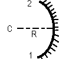
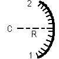

Cette page reprend l'aide d'OptGeo 3.03, écrite pour un ordinateur et une souris, adaptée à la version web : les gestes (au doigt ou à la souris), les boutons et les menus décrits sont ceux de cette version. Mode d'emploi détaillé : Utiliser OptGeo sur le web.
Miroir sphérique réel
(troué ou non)

ou
(concave ou convexe)Définition
Il est défini par les points 1 et 2 et le centre de courbure C (ou le rayon de courbure R). L'ordre des points 1 et 2 est important, car il définit quelle est la face réfléchissante, l'autre étant absorbante, comme sur l'image ci-dessus.
Le miroir peut être ajouté :
- en touchant (ou en cliquant) le bouton « Concave réel » ou « Convexe réel » de la palette des objets (famille « Miroirs »), puis en plaçant le premier point, puis le second, puis le point C (il est placé automatiquement sur la médiatrice des points 1 et 2) (voir Placer un objet).
OU
- menu « Ajouter (par coordonnées) », puis « Miroir sphérique concave (réel) » ou « Miroir sphérique convexe (réel) » (sous « Système optique réel ») : le panneau des propriétés s'ouvre, déjà rempli, et le bouton « Valider » ajoute l'élément. On donne alors les coordonnées des points 1 et 2, la valeur du rayon de courbure, et le caractère aigu ou obtus de l'angle d'ouverture du miroir (en effet, pour 1 et 2 donnés et le rayon de courbure donné, il existe deux miroirs sphériques ; celui appelé « Obtus » correspond à un angle d'ouverture (angle entre CM1 et CM2) obtus).
Options
On peut imposer
- que les hachures soient tracées ou non à l'écran
- que l'axe de symétrie du miroir soit tracé ou non
- l'épaisseur et la couleur du trait représentant le miroir à l'écran
- la couleur du trait représentant l'axe de symétrie à l'écran
On peut aussi choisir de trouer le miroir en son centre (pratique par exemple pour les télescopes de type Cassegrain).
Ces propriétés peuvent être rendues accessibles :
- à la construction du miroir si on passe par le menu « Ajouter (par coordonnées) »
- à tout instant en touchant (ou en cliquant) l'élément pour le sélectionner, puis le bouton « Propriétés » de la barre de sélection (en bas du dessin, ou en haut si elle cachait l'élément) ; le panneau des propriétés s'ouvre, son bouton « Valider » applique les modifications et « Annuler » les abandonne. On peut aussi toucher le bouton « Propriétés » de la barre du haut, puis l'élément : ce mode reste actif jusqu'au bouton « Terminer » du bandeau de consigne (ou la touche Échap).
Divers
On peut demander que la normale au miroir soit tracée à chaque point d'intersection d'un rayon lumineux avec ce miroir :
- menu « Options », vérifier que « Afficher les normales » est coché
OU
- bouton « Affichage » de la barre du haut, interrupteur « Normales »
On peut aussi demander que les angles d'incidence soient affichés (en °) :
- menu « Options », vérifier que « Afficher les angles » est coché
OU
- bouton « Affichage » de la barre du haut, interrupteur « Angles d'incidence et de réfraction »
L'angle de réflexion n'est pas affiché, afin de ne pas surcharger les représentations.
Le nombre de décimales sur les angles est fixé dans la boîte de dialogue des options des normales : menu « Options » puis « Options des normales »